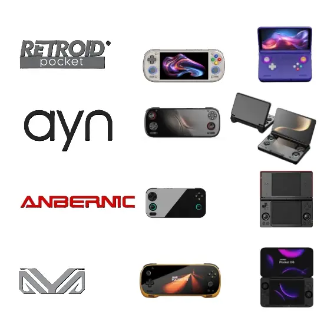

Primeiro Post
Por: Augusto Klava Araldi
Olá, hj nós veremos as novas noticias de novos consoles que estão para chegar nesse ano e nos próximos anos.
Esse blog mostrará todas as noticias do mundo dos Jogos

Por: Augusto Klava Araldi
Olá, hj nós veremos as novas noticias de novos consoles que estão para chegar nesse ano e nos próximos anos.
Por: Augusto Klava Araldi
O mercado de consoles portáteis continua evoluindo em um ritmo impressionante. Em 2026, fabricantes como Anbernic, Retroid, AYANEO, AYN e ONEXPLAYER apresentaram novos dispositivos que prometem ainda mais desempenho, melhor qualidade de construção e experiências cada vez mais próximas das encontradas em consoles e PCs.
Anbernic segue investindo em aparelhos para diferentes perfis de jogadores, oferecendo modelos que vão desde opções acessíveis até dispositivos capazes de emular plataformas mais exigentes, como GameCube, PlayStation 2 e Wii. Seu foco continua sendo a boa relação entre custo e benefício.
A Retroid também ganhou destaque com o Pocket Nova, um console que combina um design moderno, tela de alta qualidade e hardware potente. O aparelho foi desenvolvido para quem busca um portátil versátil, capaz de rodar jogos Android, realizar streaming e executar diversos emuladores com excelente desempenho.
No segmento premium, a AYANEO mantém sua tradição de lançar consoles sofisticados, com acabamento de alto nível, processadores poderosos e recursos avançados, como joysticks magnéticos e telas de alta resolução. Seus dispositivos são voltados para usuários que desejam a melhor experiência possível em um formato portátil.
Outra empresa que continua chamando atenção é a ONEXPLAYER, conhecida por desenvolver consoles portáteis baseados em Windows. Seus modelos oferecem desempenho suficiente para executar jogos modernos de PC, tornando-se uma excelente alternativa para quem deseja levar sua biblioteca de games para qualquer lugar.
Com processadores mais eficientes, baterias de maior duração, telas melhores e controles mais precisos, os consoles portáteis de 2026 mostram que essa categoria nunca esteve tão forte. A concorrência entre as fabricantes beneficia diretamente os consumidores, que agora têm mais opções para escolher o aparelho ideal, seja para jogar clássicos por meio da emulação, aproveitar títulos Android ou até mesmo rodar jogos completos de PC.
Se a evolução continuar nesse ritmo, o futuro dos consoles portáteis promete ser ainda mais empolgante para jogadores de todas as idades.
Por: Augusto Klava Araldi
Retroid Pocket Nova chega ao mercado em 2026 como uma das apostas mais interessantes da Retroid para quem busca um console portátil focado em emulação e jogos Android. O aparelho aposta em uma tela OLED de proporção 4:3, ideal para consoles clássicos como Super Nintendo, Mega Drive, Game Boy Advance, PlayStation 1 e Dreamcast, oferecendo cores vibrantes, pretos profundos e excelente contraste. Além disso, o design moderno, disponível em diversas opções de cores, combina visual retrô com acabamento premium.
No quesito desempenho, o Pocket Nova utiliza um novo processador Qualcomm desenvolvido para jogos portáteis, garantindo excelente compatibilidade com emuladores de sistemas como PSP, Nintendo 64, Dreamcast e até parte da biblioteca de PlayStation 2 e GameCube. O console também conta com controles de alta qualidade, conectividade Wi-Fi e Bluetooth, Android atualizado e suporte a diversos aplicativos e serviços de streaming de jogos. Com preço inicial em torno de US$ 229, o Pocket Nova busca oferecer uma excelente relação entre desempenho, qualidade de construção e custo-benefício, tornando-se uma das opções mais atraentes da nova geração de consoles retrô.
AYANEO Pocket Micro 2 é a evolução do Pocket Micro original e mantém sua proposta de ser um console extremamente compacto, porém com acabamento premium. Seu principal destaque continua sendo a tela de 3,5 polegadas no formato 3:2, perfeita para jogos de Game Boy Advance, oferecendo escala nativa e excelente definição. Apesar de manter o tamanho reduzido, o novo modelo recebeu melhorias significativas na ergonomia, tornando o uso muito mais confortável durante longas sessões de jogo.
Internamente, o Pocket Micro 2 passa a utilizar um processador Snapdragon mais potente, acompanhado por uma bateria de 3.950 mAh — cerca de 52% maior que a da geração anterior — proporcionando mais autonomia e melhor desempenho. Os controles também foram atualizados, com novos analógicos TMR embutidos no corpo do aparelho, reduzindo o risco de desgaste e do famoso "drift", além de melhorar a portabilidade. Voltado ao público que busca uma experiência premium em um console compacto, o AYANEO Pocket Micro 2 promete unir excelente construção, alta performance e grande fidelidade aos jogos clássicos, mantendo o foco na emulação de sistemas retrô com tecnologia moderna.